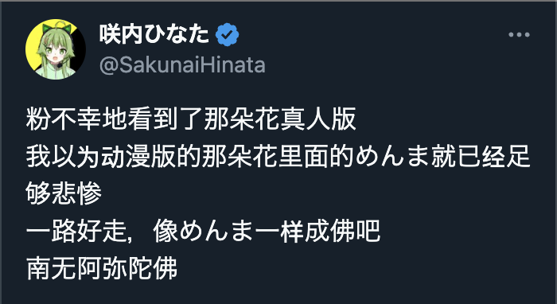

祐穂・H
@HYuusui1999
@114514kaeri @KagurazakaAzure @LitangHospital2 虽然针对的是部分低素质国人，但是主页大都是这样的内容，还是有点难视；用语上是无差别攻击，支持的也是无差别排华的右派政客；以及主张台湾建国
除了LGBT友好，对我来说，在立场上没有什么可共情了吧(´-ω-`)
刚翻到的相似立场的帖子

藤原楽進（大食い）
@114514kaeri
@KagurazakaAzure @LitangHospital2 挂了你和我，你自己去看，毕竟说真话要被人攻击，而他的工作就是攻击人，咱们说了真话政治就没有煽动力了，所以要攻击咱们，还要把咱们树立成敌人来斗争